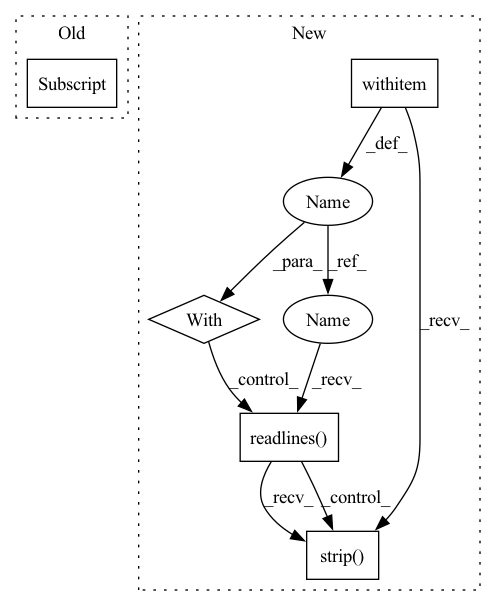

Pattern ID :42183
Before Change
X_te.append(os.path.join(data_dir, "domain_net-real_%s" % type, "test", row[0]))
if row[1] not in label_map:
label_map[row[1]] = len(label_map) + 1
Y_te.append(label_map[row[1] ])
return np.array(X_tr), torch.from_numpy(np.array(Y_tr)), np.array(X_te), torch.from_numpy(np.array(Y_te))
After Change
label_map[label] = len(label_map)
Y_tr.append(label_map[label])
with open (os.path.join(data_dir, "real_test.txt"), "r") as f:
for item in f.readlines() :
feilds = item.strip()
name, label = feilds.split(" ")
label = int(label)
if label in tiny_domain_net_class_ids.values():
X_te.append(os.path.join(data_dir, name))In pattern: SUPERPATTERN
Frequency: 3
Non-data size: 5
Instances Fragment ID: 118717202
Project Name: aminparvaneh/alpha_mix_active_learning
Commit Name: 0ad26d7f57b6b591c8feca0cafb17f63b2756306
Time: 2022-06-27
Author: amin.parvaneh@gmail.com
File Name: dataset.py
M Class Name: AnonimousClass
N Class Name: AnonimousClass
M Method Name: get_Tiny_DomainNet_Real(1)
N Method Name: get_Tiny_DomainNet_Real(2)
M Parent Class:
N Parent Class:
M File Name: dataset.py
N File Name: dataset.py
M Start Line: 244
M End Line: 268
N Start Line: 235
N End Line: 263
Before Change
label_map = {}
for idx, row in df.iterrows():
if row[1] in mini_domain_net_class_ids:
X_tr.append(os.path.join(data_dir, "domain_net-real_%s" % type, "train", row[0]))
if row[1] not in label_map:
label_map[row[1]] = len(label_map)After Change
label_map[label] = len(label_map)
Y_tr.append(label_map[label])
with open (os.path.join(data_dir, "real_test.txt"), "r") as f:
for item in f.readlines() :
feilds = item.strip()
name, label = feilds.split(" ")
label = int(label)
if label in mini_domain_net_class_ids.values():
X_te.append(os.path.join(data_dir, name)) Fragment ID: 118717201
Project Name: aminparvaneh/alpha_mix_active_learning
Commit Name: 0ad26d7f57b6b591c8feca0cafb17f63b2756306
Time: 2022-06-27
Author: amin.parvaneh@gmail.com
File Name: dataset.py
M Class Name: AnonimousClass
N Class Name: AnonimousClass
M Method Name: get_Mini_DomainNet_Real(1)
N Method Name: get_Mini_DomainNet_Real(2)
M Parent Class:
N Parent Class:
M File Name: dataset.py
N File Name: dataset.py
M Start Line: 217
M End Line: 241
N Start Line: 204
N End Line: 232
Before Change
for idx, row in df.iterrows():
//print(row[1])
if row[1] in tiny_domain_net_class_ids:
X_te.append(os.path.join(data_dir, "domain_net-real_%s" % type, "test", row[0] ))
if row[1] not in label_map:
label_map[row[1]] = len(label_map) + 1
Y_te.append(label_map[row[1]])After Change
X_tr, Y_tr, X_te, Y_te = [], [], [], []
label_map = {}
with open (os.path.join(data_dir, "real_train.txt"), "r") as f:
for item in f.readlines() :
feilds = item.strip()
name, label = feilds.split(" ")
label = int(label)
if label in tiny_domain_net_class_ids.values():
X_tr.append(os.path.join(data_dir, name)) Fragment ID: 118717200
Project Name: aminparvaneh/alpha_mix_active_learning
Commit Name: 0ad26d7f57b6b591c8feca0cafb17f63b2756306
Time: 2022-06-27
Author: amin.parvaneh@gmail.com
File Name: dataset.py
M Class Name: AnonimousClass
N Class Name: AnonimousClass
M Method Name: get_Tiny_DomainNet_Real(1)
N Method Name: get_Tiny_DomainNet_Real(2)
M Parent Class:
N Parent Class:
M File Name: dataset.py
N File Name: dataset.py
M Start Line: 244
M End Line: 268
N Start Line: 235
N End Line: 263
Before Change
def count_manifest(counter, manifest_path):
manifest_jsons = read_manifest(manifest_path)
for line_json in manifest_jsons:
for char in line_json["text"] :
counter.update(char)
After Change
def count_manifest(counter, manifest_path):
with open (manifest_path, "r", encoding="utf-8") as f:
for line in f.readlines() :
for char in line.strip( ",") [1].replace("\n", ""):
counter.update(char)
Fragment ID: 118717194
Project Name: yeyupiaoling/masr
Commit Name: 80608514986302301794ecc42ead9c388d1af7c5
Time: 2020-07-28
Author: yeyupiaoling@foxmail.com
File Name: data/build_vocab.py
M Class Name: AnonimousClass
N Class Name: AnonimousClass
M Method Name: count_manifest(2)
N Method Name: count_manifest(2)
M Parent Class:
N Parent Class:
M File Name: data/build_vocab.py
N File Name: data/build_vocab.py
M Start Line: 19
M End Line: 24
N Start Line: 19
N End Line: 24